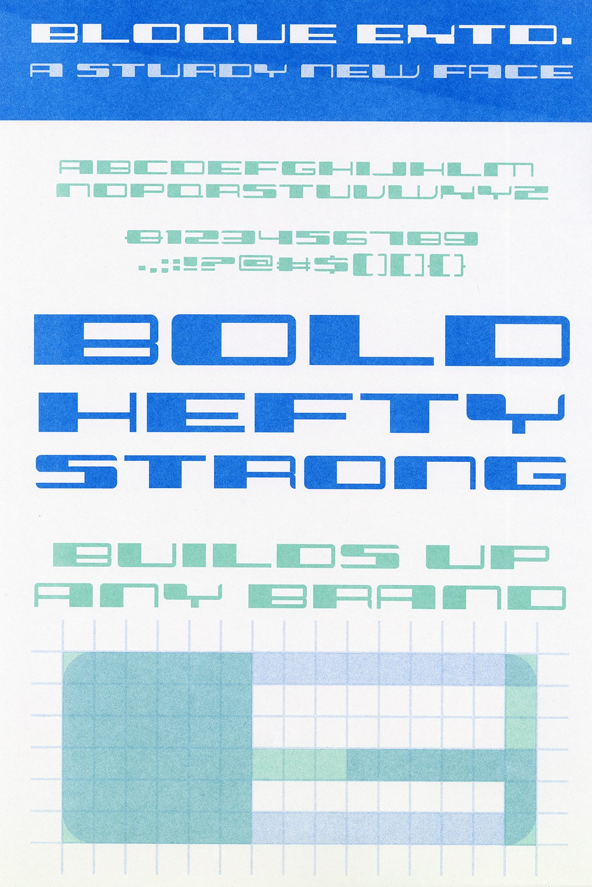
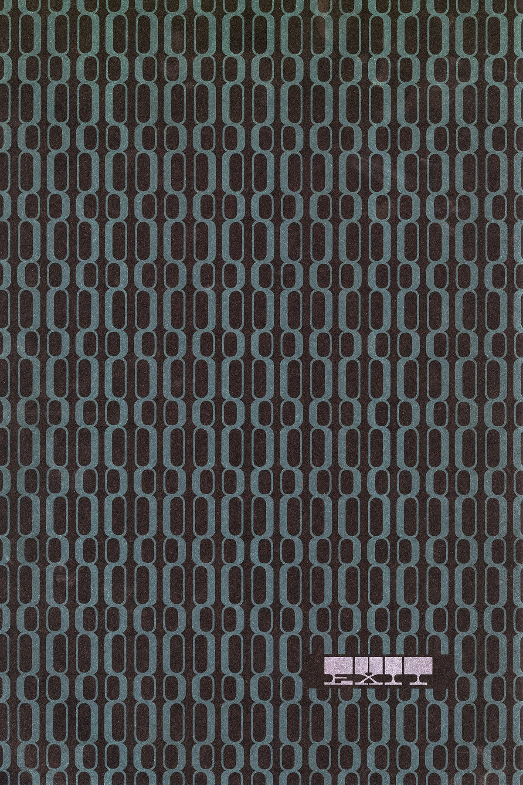
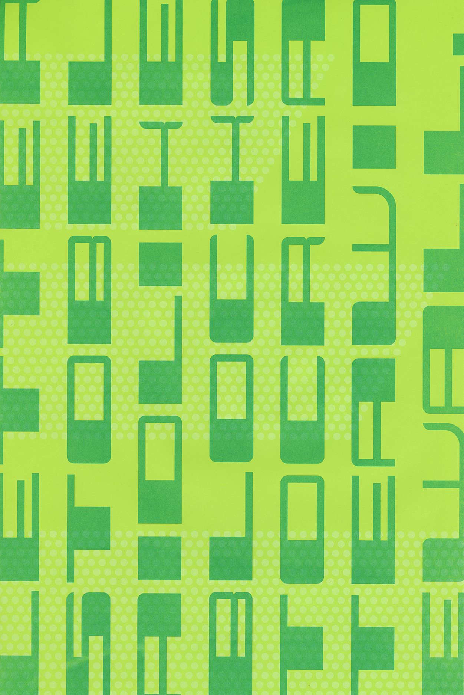

Bloque Typeface
A typeface made in an experimental typography class, Bloque is hefty, bold and strong. Perfect for building up any brand! Free font download available below.

Overview
Bloque started as an exercise in building letterforms out of a single repeating module. The result is a heavy, structural display face that reads best big — on posters, packaging, or anywhere a brand needs to feel like it's been bolted together to last.
Download the font (.otf) ↓


Next project
Checks & Balances →